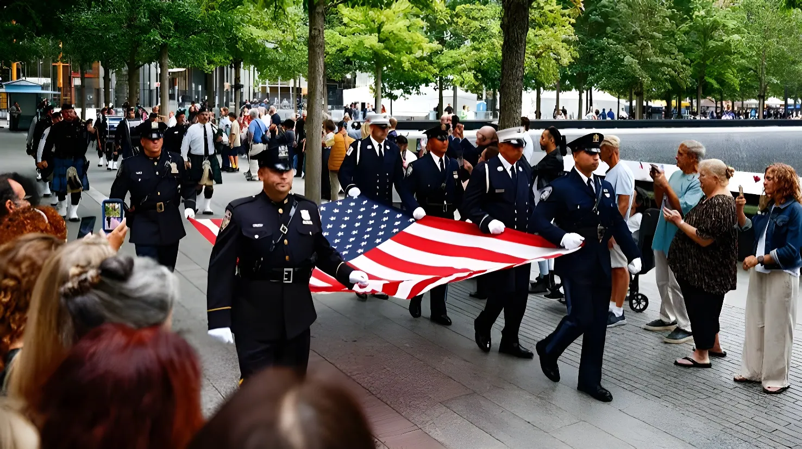

Vingt-cinq ans après les attentats du 11 septembre 2001, les États-Unis ont commémoré, le 11 septembre 2026, le souvenir des 2 977 victimes lors de cérémonies à Ground Zero et au Pentagone. Donald Trump, absent de New York mais présent à Washington, a vu les familles de victimes réclamer une nouvelle fois la déclassification des dossiers sur le rôle allégué de l'Arabie saoudite, tandis que le bilan sanitaire de la catastrophe continue, un quart de siècle plus tard, de s'alourdir.
Le vendredi 11 septembre 2026, un quart de siècle après les attentats qui ont fait 2 977 morts sur le sol américain, la nation a observé sa 25e cérémonie de commémoration. À Ground Zero, à Manhattan, les proches des victimes ont lu à voix haute, comme chaque année, les 2 983 noms des personnes tuées lors des attentats du 11 septembre 2001 et de l'attentat à la bombe du World Trade Center de 1993. Sept minutes de silence ont rythmé la matinée, marquant les instants où chacune des deux tours a été percutée puis s'est effondrée, l'heure de l'attaque du Pentagone, le crash du vol 93, et, pour la première fois incluse dans le rituel, un hommage à celles et ceux emportés depuis par les maladies liées au site.
Le président Donald Trump n'a pas assisté à la cérémonie de New York. Il s'est rendu au Pentagone aux côtés du secrétaire à la Guerre Pete Hegseth, tandis que le vice-président J.D. Vance représentait l'exécutif à Ground Zero, entouré des quatre anciens présidents vivants — George W. Bush, Bill Clinton, Barack Obama et Joe Biden — ainsi que du maire de New York Zohran Mamdani. Le violoncelliste Yo-Yo Ma a ouvert la lecture des noms, avant qu'un concert réunissant l'Orchestre philharmonique de New York et l'orchestre de l'armée américaine ne clôture les commémorations en soirée.
« Le président rendra hommage à celles et ceux qui ont été tués par des terroristes, honorera leurs proches et saluera le courage des premiers intervenants qui ont risqué leur vie pour sauver leurs concitoyens. »
— Anna Kelly, porte-parole de la Maison-Blanche, 11 septembre 2026Le vol American Airlines 11 percute la tour Nord du World Trade Center.
Le vol United Airlines 175 percute la tour Sud.
Le vol American Airlines 77 s'écrase sur le Pentagone.
La tour Sud du World Trade Center s'effondre.
Le vol United Airlines 93 s'écrase près de Shanksville, en Pennsylvanie, après la révolte des passagers.
La tour Nord s'effondre à son tour.
Vingt-cinq ans après, le bilan humain du 11-Septembre continue de s'alourdir loin des projecteurs. Selon les autorités sanitaires new-yorkaises, environ 6 000 premiers intervenants, survivants et volontaires exposés à la poussière toxique de Ground Zero seraient morts depuis 2001 de maladies liées au site — un chiffre supérieur au nombre de victimes directes des attentats. Cette année encore, le service des pompiers de New York (FDNY) a ajouté 36 nouveaux noms de pompiers décédés de maladies post-11-Septembre à son mur commémoratif, portant leur nombre total à un niveau proche des 343 pompiers tués le jour même des attentats.
La cérémonie de Ground Zero a de nouveau été marquée par les appels des familles de victimes à la transparence sur le rôle allégué de responsables saoudiens dans la préparation des attentats. Terry Strada, présidente de l'association 9/11 Families United et veuve d'une victime, a interpellé les responsables présents, reprochant aux administrations successives — y compris celle de Barack Obama, présent dans l'assistance — d'avoir « protégé » Riyad plutôt que les familles des victimes.
La Maison-Blanche a répondu en mettant en avant la déclassification, sous l'administration Trump, de 71 documents de la CIA relatifs au 11-Septembre — la plus importante publication de ce type à ce jour — sans toutefois s'engager explicitement à lever le secret sur les documents visant l'Arabie saoudite, un pays avec lequel Donald Trump entretient des relations économiques et diplomatiques étroites.
| Événement | Date | Ce qu'il révèle |
|---|---|---|
| Cérémonie de Ground Zero | 11 sept. 2026 | Lecture des 2 983 noms des victimes |
| Cérémonie du Pentagone | 11 sept. 2026 | Trump absent de New York, présent à Washington |
| Déclassification de la CIA | 2026 | 71 documents rendus publics sur le 11-Septembre |
| Nouveaux noms sur le mur du FDNY | 2026 | 36 pompiers morts de maladies liées au site |
« Depuis vingt-cinq ans, administration après administration, on a choisi de protéger les Saoudiens plutôt que de se tenir aux côtés des familles du 11-Septembre. »
— Terry Strada, présidente de 9/11 Families United, Ground Zero, 11 septembre 2026Vingt-cinq ans plus tard, le 11-Septembre a cessé d'être un souvenir vécu pour devenir, pour une partie grandissante de la population américaine, un chapitre appris à l'école. Mais le temps qui passe n'a pas refermé la plaie : il l'a seulement déplacée, du choc initial vers les salles d'hôpital où meurent encore d'anciens sauveteurs, et vers les dossiers toujours scellés que les familles des victimes espèrent voir s'ouvrir avant qu'il ne soit trop tard pour en connaître le contenu.
Twenty-five years after the September 11, 2001 attacks, the United States marked the anniversary on September 11, 2026, with ceremonies honoring the 2,977 victims at Ground Zero and the Pentagon. President Donald Trump, absent from New York but present in Washington, once again faced calls from victims' families to declassify files on Saudi Arabia's alleged role, while the health toll from the attacks kept climbing a quarter-century later.
On Friday, September 11, 2026, a quarter-century after attacks that killed 2,977 people on American soil, the nation marked its 25th commemoration. At Ground Zero in Manhattan, victims' relatives read aloud, as every year, the 2,983 names of those killed in the September 11, 2001 attacks and the 1993 World Trade Center bombing. Seven moments of silence punctuated the morning, marking when each tower was struck and fell, the attack on the Pentagon, the crash of Flight 93, and, newly added to the ritual, a tribute to those since lost to 9/11-related illness.
President Trump did not attend the New York ceremony. He traveled to the Pentagon alongside Secretary of War Pete Hegseth, while Vice President J.D. Vance represented the administration at Ground Zero, joined by the four living former presidents — George W. Bush, Bill Clinton, Barack Obama and Joe Biden — and New York City Mayor Zohran Mamdani. Cellist Yo-Yo Ma opened the reading of the names, and the day closed with a concert bringing together the New York Philharmonic and the U.S. Army Field Band.
"The president will remember those who were killed at the hands of evil terrorists, honor their loved ones, and pay tribute to the brave first responders who put their lives on the line."
— Anna Kelly, White House spokeswoman, September 11, 2026American Airlines Flight 11 hits the North Tower of the World Trade Center.
United Airlines Flight 175 hits the South Tower.
American Airlines Flight 77 crashes into the Pentagon.
The South Tower of the World Trade Center collapses.
United Airlines Flight 93 crashes near Shanksville, Pennsylvania, after passengers fight back.
The North Tower collapses.
Twenty-five years on, the human cost of 9/11 keeps climbing out of the spotlight. New York health officials estimate that around 6,000 first responders, survivors and volunteers exposed to toxic dust at Ground Zero have since died of related illnesses — more than the number killed in the attacks themselves. This year, the FDNY added 36 more firefighters who died of 9/11-related disease to its memorial wall, pushing the post-attack toll close to the 343 firefighters killed on the day itself.
The Ground Zero ceremony was again marked by families' calls for transparency over the alleged role of Saudi officials in the plot. Terry Strada, national chair of 9/11 Families United and a victim's widow, confronted officials in attendance, accusing successive administrations — including Barack Obama's, seated in the crowd — of protecting Riyadh instead of the victims' families.
The White House responded by pointing to the Trump administration's declassification of 71 CIA documents on 9/11 — the largest release of its kind to date — without explicitly committing to lifting secrecy on the files concerning Saudi Arabia, a country with which Trump maintains close economic and diplomatic ties.
| Event | Date | What it shows |
|---|---|---|
| Ground Zero ceremony | Sept. 11, 2026 | Reading of the 2,983 victims' names |
| Pentagon ceremony | Sept. 11, 2026 | Trump absent from NY, present in DC |
| CIA declassification | 2026 | 71 documents on 9/11 made public |
| New names on FDNY wall | 2026 | 36 firefighters died of related illness |
"For 25 years, administration after administration... chose to protect the Saudis instead of standing with the 9/11 families."
— Terry Strada, chair of 9/11 Families United, Ground Zero, September 11, 2026Twenty-five years later, 9/11 has stopped being a lived memory for a growing share of Americans and become a chapter learned in school. But the passage of time hasn't closed the wound — it has only moved it, from the initial shock to hospital wards where former rescuers still die, and to the still-sealed files that victims' families hope will open before it's too late to learn what's inside.